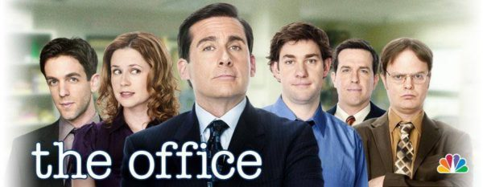

Если бы я был всемогущ, я бы запретил использование пакета Microsoft Office. Все программы этого пакета, не просто бесполезны, они делают жизнь окружающих сложнее, и в общем увеличивают энтропию нашего мира. Всё, производимое с помощью этих программ — избыточная пыль.

Документы, это текст, и ничего больше, Word не нужен тебе, опомнись… Всё (без исключений) что делается с помощью PowerPoint, заставляет меня смеяться и дрожать одновременно. Outlook? Да, ты издеваешься…
Исключение я бы, пожалуй, сделал лишь для Microsoft Excel. Он нужен при вёрстке бюджета…